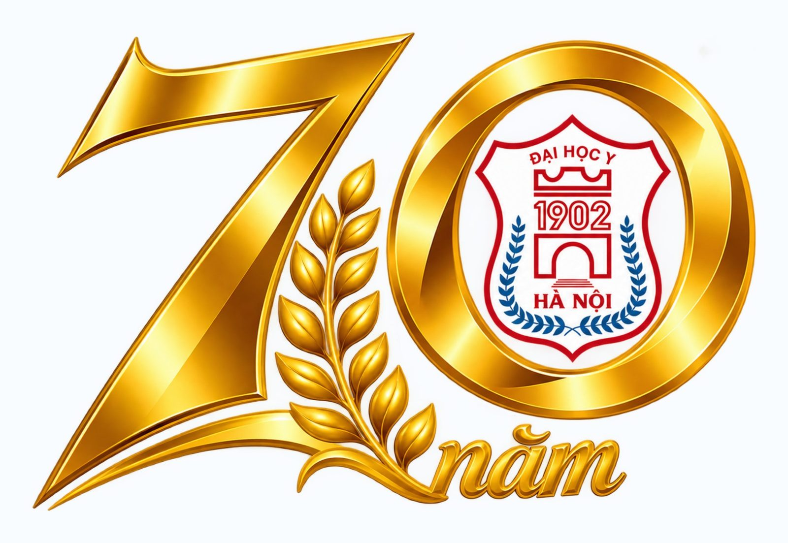

BỘ MÔN SINH LÝ BỆNH - MIỄN DỊCH
Đào tạo, nghiên cứu và kết nối học thuật
Thành lập năm 1956, Bộ môn đã trải qua sáu thập kỷ đào tạo, nghiên cứu và phát triển chuyên ngành Sinh lý bệnh - Miễn dịch.
TIN TỨC
Chương trình sự kiện theo từng khung giờ tại Giảng đường 12
Thư mời và mã QR đăng ký tham dự lễ kỷ niệm
SỰ KIỆN
Lễ kỷ niệm 70 năm thành lập Bộ môn Sinh lý bệnh - Miễn dịch
Lễ kỷ niệm 60 năm thành lập Bộ môn
Các chương trình học thuật và kết nối chuyên môn
GIỚI THIỆU
Bộ môn Sinh lý bệnh - Miễn dịch, Trường Đại học Y Hà Nội
Sinh lý bệnh được hình thành năm 1956; Miễn dịch học ra đời năm 1980. Các số liệu lịch sử trên trang được trích từ Báo cáo kỷ niệm 60 năm của Bộ môn.
Bộ môn là “cái nôi” của các Bộ môn Sinh lý bệnh - Miễn dịch tại các trường Y trong cả nước.
Ba thầy Nguyễn Thế Khánh, Lê Văn Chánh và Vũ Triệu An là những người sáng lập môn Sinh lý bệnh tại Trường Đại học Y Hà Nội năm 1956. Thầy Vũ Triệu An tiếp tục sáng lập môn Miễn dịch học năm 1980.
Website tập hợp thông tin giới thiệu, hoạt động, sự kiện, đào tạo, nghiên cứu, tin tức và liên hệ trong một hệ thống thống nhất. Dấu mốc 70 năm hình thành và phát triển, từ 1956 đến 2026, là một sự kiện nổi bật trong dòng hoạt động chung của Bộ môn.
- ĐƠN VỊ
- Bộ môn y học cơ sở
- TRỰC THUỘC
- Trường Đại học Y Hà Nội
- DẤU MỐC
- 1956–2026
Lịch sử hình thành và các thế hệ thầy cô
Trường Đại học Y Hà Nội được thành lập năm 1902. Theo Báo cáo kỷ niệm 60 năm của Bộ môn, Sinh lý bệnh là một trong những bộ môn trẻ của Trường, hình thành năm 1956; Miễn dịch học ra đời sau đó vào năm 1980.
BS Nguyễn Thế Khánh
Đồng sáng lập môn Sinh lý bệnh năm 1956; nguyên Phó Giám đốc Viện Quân y 108, Trưởng ban Bảo vệ sức khỏe Trung ương. Công tác tại Bộ môn từ 1956 đến 1958; được tặng Huân chương Độc lập.
BS Lê Văn Chánh
Đồng sáng lập môn Sinh lý bệnh năm 1956; bác sĩ bảo vệ sức khỏe Chủ tịch Hồ Chí Minh. Công tác tại Bộ môn từ 1956 đến 1957; được tặng Huân chương Độc lập.
BS Vũ Triệu An
Đồng sáng lập môn Sinh lý bệnh năm 1956, sáng lập môn Miễn dịch học năm 1980; nguyên Trưởng khoa Quân y viện 108. Gắn bó với Bộ môn 50 năm; được tặng Huân chương Độc lập và danh hiệu Nhà giáo nhân dân.
Cột mốc phát triển về chất
Năm 1980 Bộ môn có 1 giáo sư; năm 1984 có 3 phó giáo sư; nghiên cứu sinh đầu tiên bảo vệ luận án tiến sĩ năm 1985, một trong những luận án sớm nhất của Trường.
Sáu thập kỷ phát triển về lượng và chất
500–600Công trình khoa học đã công bố
4 GS · 6 PGSChức danh khoa học ghi nhận đến năm 2016
7 + 4Giáo trình Sinh lý bệnh và giáo trình Miễn dịch học; trung bình 5 năm thay mới sách một lần
1.900Học viên năm 2016 với 7 thầy
Bảng số liệu thầy và trò
Số liệu về đội ngũ giảng dạy và học viên được ghi nhận tại bốn mốc trong Báo cáo kỷ niệm 60 năm.
| Năm | Số thầy | Số học viên |
|---|---|---|
| 1960 | 4 | 200 |
| 1970 | 10 | 700 |
| 1980 | 13 | 1.100 |
| 2016 | 7 | 1.900 |
“Cái nôi” đào tạo giảng viên Sinh lý bệnh - Miễn dịch
Bộ môn đào tạo chuyên khoa sơ bộ từ năm 1959; đào tạo giảng viên cho các trường Y mới ở miền Bắc gồm Hải Phòng, Thái Nguyên, Thái Bình và sau năm 1975 cho các trường tại TP. Hồ Chí Minh, Huế, Cần Thơ.
Bộ môn cung cấp cho quân y 5 cán bộ giảng dạy, gồm 2 giáo sư và 3 phó giáo sư. Từ năm 1980, Bộ môn tham gia đào tạo sau đại học: tiến sĩ, thạc sĩ, bác sĩ nội trú, chuyên khoa I và chuyên khoa II.
Phát triển trong 10 năm 2006–2016
4 cán bộ được phong phó giáo sư; 4 cán bộ bảo vệ thành công luận án tiến sĩ, trong đó 3 tiến sĩ được đào tạo ở nước ngoài tại Thụy Điển và Nhật Bản; công bố trên 10 bài báo quốc tế.
Cơ sở vật chất và trang thiết bị được đầu tư từ Bộ Y tế và dự án ADB. Bộ môn triển khai giảng dạy bằng tiếng Anh, tiếng Pháp, đổi mới e-learning và hướng dẫn sinh viên Y6 làm khóa luận tại Bộ môn.
Nghiên cứu, dịch vụ và hợp tác
Các hướng nghiên cứu gồm virus và ung thư liên quan; biến thể gen liên quan đến bệnh; vai trò ADN phôi thai trong sản khoa; nhân chủng gen học người Việt Nam; tế bào gốc và ứng dụng.
Bộ môn triển khai xét nghiệm miễn dịch phục vụ ghép tạng; hợp tác quốc tế với Thụy Điển, Nhật Bản, Úc, Pháp và hợp tác trong nước với các đơn vị trong và ngoài Trường.
Khen thưởng tập thể và cá nhân đến năm 2016
01 Huân chương Độc lập hạng Nhì · 05 Huân chương Lao động hạng Ba · 05 Nhà giáo nhân dân · 03 Nhà giáo ưu tú · 04 Giáo sư · 06 Phó giáo sư · 02 Bằng khen của Thủ tướng Chính phủ · 02 Bằng khen của Bộ trưởng Bộ Y tế.
Nguồn: Báo cáo kỷ niệm 60 năm Bộ môn Sinh lý bệnh - Miễn dịch (1956–2016), tư liệu chính thức do Bộ môn cung cấp.
Đội ngũ hiện tại
TS.BS. Nguyễn Văn Đô
Kiêm Trưởng khoa Da liễu và Dị ứng - Miễn dịch lâm sàng, Bệnh viện Đại học Y Hà Nội; chuyên sâu Sinh lý bệnh - Miễn dịch, Sinh học tế bào và Ung thư học.
TS.BS. Hồ Quang Huy
Kiêm Trưởng khoa Xét nghiệm, Bệnh viện K cơ sở 2; chuyên sâu cơ chế đáp ứng miễn dịch, thiểu năng miễn dịch và miễn dịch bệnh lý.
TS.BS. Nguyễn Thanh Bình
Kiêm Trưởng khoa Trung tâm Tế bào gốc, Bệnh viện Tâm Anh; chuyên sâu Huyết học - Miễn dịch.
Đội ngũ kỹ thuật viên
CN. Phan Mai Hoa · CN. Nguyễn Minh Huyền · CN. Nguyễn Thị Thanh Bình · CN. Nguyễn Văn Tuất · CN. Trần Minh Khoa · CN. Đỗ Thị Nga · CN. Đỗ Thị Hương
HOẠT ĐỘNG
Các mảng hoạt động của Bộ môn
Các mảng hoạt động được tổng hợp từ Báo cáo kỷ niệm 60 năm của Bộ môn, gồm đào tạo, nghiên cứu, dịch vụ chuyên môn và hợp tác.
Giảng dạy & đào tạo
Đào tạo chuyên khoa sơ bộ từ năm 1959; tham gia đào tạo sau đại học từ năm 1980 và đào tạo giảng viên cho các trường Y trong cả nước.
Nghiên cứu & dịch vụ
Nghiên cứu virus, ung thư, biến thể gen, ADN phôi thai, nhân chủng gen học và tế bào gốc; xét nghiệm miễn dịch phục vụ ghép tạng.
Hợp tác
Hợp tác quốc tế với Thụy Điển, Nhật Bản, Úc, Pháp và hợp tác trong nước với các đơn vị trong và ngoài Trường.
SỰ KIỆN
Sự kiện và chương trình
Nơi tổng hợp các sự kiện học thuật, hoạt động kết nối và chương trình đáng chú ý của Bộ môn Sinh lý bệnh - Miễn dịch, Trường Đại học Y Hà Nội.
Sự kiện nổi bật: Lễ kỷ niệm 70 năm thành lập, ngày 06/11/2026.
Xem toàn bộ thông tin sự kiện ↓Lễ kỷ niệm 60 năm thành lập Bộ môn
Sự kiện đã diễn ra năm 2016, nhìn lại sáu thập kỷ hình thành và phát triển, các thế hệ sáng lập, thành tựu đào tạo, nghiên cứu, hợp tác và khen thưởng của Bộ môn Sinh lý bệnh - Miễn dịch.
SỰ KIỆN NỔI BẬT
Lễ kỷ niệm 70 năm thành lập
Bộ môn Sinh lý bệnh - Miễn dịch, Trường Đại học Y Hà Nội
1956 — 2026
- Thời gian
- 08:30, Thứ Sáu · 06/11/2026
- Địa điểm
- Giảng đường 12, Trường Đại học Y Hà Nội
- Địa chỉ
- Số 01 Tôn Thất Tùng, Kim Liên, Hà Nội

MỘT DẤU MỐC ĐÁNG NHỚ
Bảy thập kỷ hình thành và phát triển
Năm 2026 đánh dấu 70 năm hình thành và phát triển của Bộ môn Sinh lý bệnh - Miễn dịch, Trường Đại học Y Hà Nội. Lễ kỷ niệm là dịp nhìn lại hành trình từ năm 1956, tri ân các thế hệ thầy cô và cùng hướng tới chặng đường tiếp theo.
Chương trình gồm báo cáo quá trình hoạt động, phim tư liệu 70 năm, phát biểu của các thế hệ cán bộ Bộ môn, lãnh đạo Nhà trường và đại diện các đơn vị bạn.
1956Năm thành lập
70 nămHành trình được kỷ niệm
2026Dấu mốc hội ngộ
Thông tin lễ kỷ niệm
THỜI GIAN
08:30–13:00
Thứ Sáu, 06/11/2026
Thứ Sáu, 06/11/2026
ĐỊA ĐIỂM CHƯƠNG TRÌNH
Giảng đường 12
Trường Đại học Y Hà Nội
Số 01 Tôn Thất Tùng, Kim Liên, Hà Nội
Trường Đại học Y Hà Nội
Số 01 Tôn Thất Tùng, Kim Liên, Hà Nội
ĐỊA ĐIỂM DỰ TIỆC
Nhà hàng Cánh Hồ
173B Trường Chinh, Hà Nội
173B Trường Chinh, Hà Nội
NGÀY 06 THÁNG 11 NĂM 2026
Chương trình sự kiện
Chương trình chính thức tại Giảng đường 12, Trường Đại học Y Hà Nội; sau đó đại biểu di chuyển tới địa điểm dự tiệc.
Đón tiếp đại biểu
Giới thiệu đại biểu · Phát biểu khai mạc
Báo cáo quá trình hoạt động Bộ môn
Phim tư liệu 70 năm hình thành và phát triển Bộ môn
Phát biểu của các thầy/cô cựu cán bộ Bộ môn
Phát biểu chúc mừng của Lãnh đạo Nhà trường
Phát biểu chúc mừng của đại diện các đơn vị bạn
Phát biểu bế mạc · Chụp ảnh lưu niệm
Di chuyển ra nhà hàng · Dự tiệc
Lưu ý địa điểm: Phần lễ diễn ra tại Giảng đường 12. Tiệc gặp mặt diễn ra tại Nhà hàng Cánh Hồ, 173B Trường Chinh, Hà Nội.
TƯ LIỆU CHÍNH THỨC
Thư mời và thông tin đăng ký
Chọn vào từng hình để xem lớn. Thư mời ghi đầy đủ thời gian, địa điểm, chương trình và mã QR đăng ký tham dự.
Đăng ký tham dự
Mã QR được tách riêng, hiển thị lớn và giữ đúng tỷ lệ để đại biểu dễ quét trên máy tính hoặc điện thoại.
ĐÀO TẠO
Thông tin dành cho người học
Các nội dung đào tạo dưới đây được ghi nhận trong Báo cáo kỷ niệm 60 năm của Bộ môn.
Đào tạo chuyên khoa sơ bộ và sinh viên
Bộ môn đào tạo chuyên khoa sơ bộ từ năm 1959; trong giai đoạn 2006–2016, sinh viên Y6 làm khóa luận tại Bộ môn.
Đào tạo Sau đại học
Từ năm 1980, Bộ môn tham gia đào tạo tiến sĩ, thạc sĩ, bác sĩ nội trú, chuyên khoa I và chuyên khoa II.
Đào tạo đội ngũ giảng viên
Là “cái nôi” đào tạo giảng viên Sinh lý bệnh - Miễn dịch cho các trường Y tại Hải Phòng, Thái Nguyên, Thái Bình, TP. Hồ Chí Minh, Huế và Cần Thơ; cung cấp cho quân y 5 cán bộ giảng dạy gồm 2 GS và 3 PGS.
Đổi mới phương pháp và học liệu
Giảng dạy bằng tiếng Anh và tiếng Pháp, ứng dụng e-learning; xây dựng 7 giáo trình Sinh lý bệnh và 4 giáo trình Miễn dịch học, trung bình 5 năm thay mới sách một lần.
NGHIÊN CỨU
Nghiên cứu và trao đổi học thuật
Các hướng nghiên cứu, dịch vụ và hợp tác được ghi nhận trong giai đoạn 2006–2016 của Báo cáo kỷ niệm 60 năm.
Hướng nghiên cứu
Virus và ung thư liên quan; biến thể gen liên quan đến bệnh; vai trò ADN phôi thai trong sản khoa; nhân chủng gen học người Việt Nam; tế bào gốc và ứng dụng.
Dịch vụ chuyên môn
Xét nghiệm miễn dịch phục vụ ghép tạng.
Hợp tác quốc tế
Hợp tác với Thụy Điển, Nhật Bản, Úc và Pháp.
Hợp tác trong nước
Hợp tác với các đơn vị trong và ngoài Trường Đại học Y Hà Nội.
TIN TỨC
Thông tin mới và đáng chú ý
Các cập nhật hiện có tập trung vào sự kiện 70 năm. Những thông báo tiếp theo sẽ được bổ sung tại khu vực này.
Thông tin chính thức Lễ kỷ niệm 70 năm thành lập
Chương trình diễn ra từ 08:30 tại Giảng đường 12, Trường Đại học Y Hà Nội, sau đó đại biểu dự tiệc tại Nhà hàng Cánh Hồ.
Chương trình sự kiện theo từng khung giờ
Thông tin đón tiếp, khai mạc, phim tư liệu, phát biểu, chụp ảnh và dự tiệc.
Thư mời và mã QR đăng ký tham dự
Tư liệu chính thức có thể mở lớn trực tiếp tại mục Sự kiện trên website.
Dấu mốc bảy thập kỷ
Lễ kỷ niệm là dịp nhìn lại hành trình hình thành, phát triển và kết nối nhiều thế hệ.
LIÊN HỆ
Kết nối với Bộ môn
Bộ môn Sinh lý bệnh - Miễn dịch, Trường Đại học Y Hà Nội
Thông tin liên hệ chính thức của Bộ môn sẽ được cập nhật tại đây.
Thông tin về Lễ kỷ niệm 70 năm và biểu mẫu đăng ký được đăng tại mục Sự kiện.